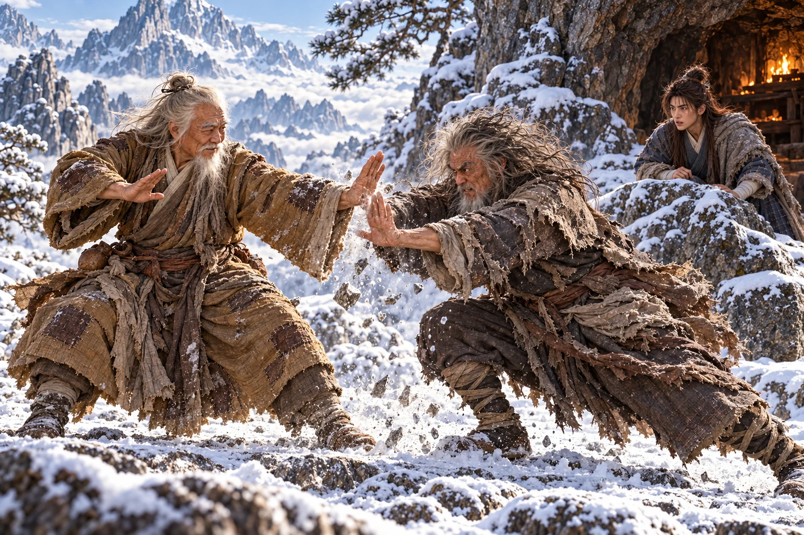
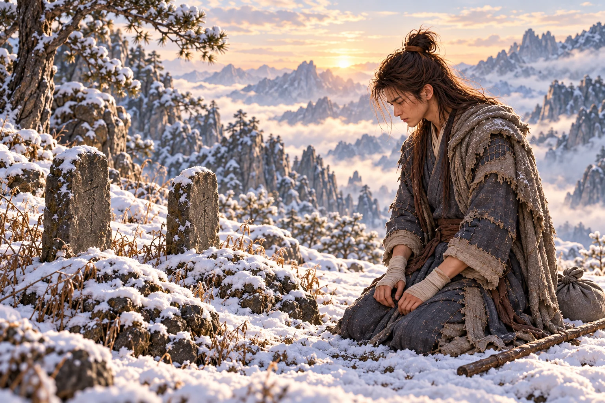

Salju pertama melekat pada sambungan jubah yang dijahit .
menepisnya dengan tangan kanan. Sepanjang jalan menuju pegunungan, ia bertanya di tempat-tempat persinggahan; tak seorang pun dapat memastikan telah melihat perempuan yang dicarinya. Kini jalan menyempit di antara batu, dan angin menghapus bekas langkah sebelum ia sempat menoleh.
Di bawah sebuah ceruk, seseorang sedang memanggang makanan.
Lelaki tua itu mengenakan jubah bertambal warna tanah. Janggut putihnya bergerak ketika ia meniup ujung ubi, sementara sebatang tongkat kayu terbaring di dekat lutut. Ia melirik Dani, lalu ruang kosong di sebelah api.
“Kalau engkau hendak menanyakan jalan, hangatkan dahulu lidahmu. Sejak tadi gigimu lebih nyaring daripada langkahmu,” kata lelaki tua itu.
Dani memberi hormat sebelum masuk ke bawah batu. “Terima kasih, Tetua. Saya mencari seorang perempuan berpakaian putih. Namanya Xiaolongnü.”
“Tidak berpapasan denganku.” Orang tua itu membelah ubi. “Tetapi kalau ia pandai memilih tempat berteduh, engkau tidak akan menemukannya dengan berdiri di tengah angin.”
Potongan yang lebih besar disodorkan kepada Dani. Ia menerimanya, kemudian tanpa sadar memandang tangan pemberinya.
“Ada yang salah dengan makananku?” tanya orang tua itu.
“Tidak, Tetua. Ayah angkat saya pernah membagi ubi seperti ini.” Dani menunduk. “Saya sedang memikirkan beliau.”
“Kalau begitu, makanlah sebelum kenanganmu membuatnya dingin.”
Dani tersenyum kecil. “Tetua sudah memberiku tempat dan makanan. Jangan-jangan sesudah ini aku disuruh membersihkan seluruh salju di gunung untuk membayarnya.”
“Jangan terlalu menghargai tenagamu, bocah. Mengumpulkan kayu kering saja sudah cukup.”
Lelaki tua itu tertawa, lalu menunjuk balutan pada tangan Dani. Ketika mendengar bagaimana luka itu didapat, tawanya berhenti.
“Dua orang dibunuh di kedai, katamu? Apakah engkau mengetahui nama mereka?”
menggeleng. “Anggota , Tetua. Mereka hanya mencoba menghalangi .”
Orang tua itu meletakkan makanannya. Ia meminta Dani menyebutkan letak kedai dan mengulangi kejadian tersebut sampai selesai, tanpa sekali pun menyela untuk menanyakan kemenangan siapa.
“Namaku ,” katanya kemudian. “Aku pernah memimpin klan itu. Dua orang itu berani menghadang Li Mochou ketika banyak mata memilih memandang meja. Bila kelak engkau bertemu saudara-saudara mereka, ceritakan keberanian itu. Keluarga mereka patut mengetahuinya.”
Dani meluruskan punggung. “Saya akan mengingatnya, Tetua Hong.”
Hong Qigong mengangguk. Sesudah mendengar nama disebut, ia menanyakan keadaan muridnya itu. Dani menjawab tentang rumah keluarga Guo, , lalu makam tempat ia memperoleh seorang guru yang bersedia menerimanya.
“Dan sekarang gurumu yang kaucari?” tanya Hong Qigong.
“Aku mencintainya,” jawab Dani. Tenggorokannya terasa sempit, tetapi ia meneruskan. “Ketika ia meminta jawaban, aku malah membuatnya salah mengerti. Sekarang aku bahkan tak tahu ke mana harus mencarinya, Tetua.”
Hong Qigong memandangnya tanpa tertawa. “Nyali untuk menghadapi Li Mochou kaupikul sampai ke kedai, tetapi untuk mengucapkan isi hati kaukehilangan jalan.” Hong menghela napas. “Bila kelak bertemu, jangan menunggu perpisahan kedua untuk menyelesaikan kalimatmu.”
Dani meraba jahitan di rusuknya. “Menghadapi Li Mochou aku masih tahu ke mana harus mengelak. Kalau Bibi menatapku sambil menangis, seluruh kepandaianku hilang, Tetua.”
Ia baru kembali membawa kayu ketika suara bentakan mengguncang ceruk.
“Anakku! Keluar! Mengapa bersembunyi dari ayahmu?”
menuruni batu dengan kedua lengan terbuka. Rambutnya kusut oleh angin; pandangannya berpindah dari Dani kepada Hong Qigong, lalu kembali lagi seolah kedua wajah itu tak dapat berada dalam satu ingatan.
“Ayah, hati-hati. Ada es di bawah kaki—”
Tangan tua sudah menjepit pundaknya. Dani menjatuhkan kayu. Ia masih marah karena obat Ouyang Feng telah mengacaukan malam di gubuk, namun kegembiraan bertemu ayah angkatnya datang tanpa dapat ditahan. Ia ingin memperoleh jawaban dan tetap ingin orang ini memanggilnya anak. Kedua keinginan itu membuat suaranya lebih sukar dijaga.
“Engkau meninggalkan aku! Aku menyuruhmu menunggu. Tidak, aku yang menunggu. Siapa yang menyembunyikanmu?” desak Ouyang Feng.
“Aku pergi mencari Bibi. Ayah, dengarkan dahulu.” menahan pergelangan itu. “ membuat pikiranku tidak jernih. Ada sesuatu yang terjadi dan tidak dapat kuingat dengan utuh. Bibi pergi sesudahnya.”
Ouyang Feng memiringkan kepala.
“Obat? Supaya kuat! Anakku harus kuat. Mereka tidak boleh memukulmu!”
“Ayah menyuruhku menelannya, dan aku percaya.” Suara Dani bergetar. “Sekarang aku tidak dapat mengingat apa yang kulakukan malam itu. Pandanglah aku, Ayah. Aku sedang meminta jawaban, bukan pelajaran baru.”
Pegangan di pundaknya mengencang. Ouyang Feng tiba-tiba menoleh ke celah batu, menggeram kepada seseorang yang tidak ada di sana.
“Siapa yang mengajari anakku melawan? Keluar! Aku tahu kau bersembunyi!”
berdiri. Ujung tongkatnya menyentuh bagian luar siku Ouyang Feng; tekanannya singkat, tetapi cukup mengubah arah tarikan sehingga Dani dapat melepaskan bahu.
“Bocah itu sedang berbicara kepadamu. Dengarkan dengan telinga, bukan dengan mencengkeramnya,” kata Hong Qigong.
Ouyang Feng membeku. Ia memandang janggut putih di hadapannya, mula-mula curiga, kemudian dengan kebencian yang muncul terlalu cepat.
“Pengemis! Kau masih hidup? Kau yang mencuri—apa yang kaucuri? Jangan mendekati anakku!”
“Aku belum berniat mati hanya untuk menyenangkanmu, Racun Tua.” Hong Qigong menurunkan tongkat. “Lepaskan urusan bocah ini dahulu.”
“Ayah, Tetua Hong memberiku makan. Beliau tidak menyakitiku,” kata Dani.
mendadak tertawa. Ia menepuk dada Dani, lalu mendorongnya menjauh dengan kekuatan yang membuat pemuda itu harus menapak dua kali.
“Lihat baik-baik! Ayahmu mengalahkannya. Sesudah itu kau tahu siapa yang paling hebat!”
Pukulan pertama datang ketika Hong Qigong masih berdiri di tepi ceruk.
Ia menggeser kaki, menangkis dengan telapak, lalu membawa pertarungan menjauhi . Salju di bawah tumitnya terkelupas, memperlihatkan batu gelap. Ouyang Feng mengikuti dengan tubuh merendah; napas berat berkumpul di dada sebelum kedua tangannya menghantam maju.
Dani mengenali . Ia belum pernah melihatnya dilepaskan sedekat itu dengan seluruh tubuh terlibat.
Hong Qigong menyambut tenaga tersebut. Benturan mengirim bunyi pendek ke dinding gunung. Batu sebesar bangku yang tersentuh pukulan menyamping retak pada permukaannya; pecahannya meluncur melewati kaki Dani. Ia mundur ke balik tonjolan karang.

Tidak ada tangan yang sekadar bergerak cepat. Setiap langkah menutup tempat berdiri lawan; setiap tangkisan memaksa pinggang dan lutut menanggung sisa tenaga yang tak terlihat. Dua orang tua itu tetap menjejak bumi, tetapi Dani merasa seluruh bidang batu terlalu sempit bagi mereka.
“Ayah! Tetua Hong! Hentikan dahulu!” seru Dani.
Ouyang Feng tidak menoleh. hanya sempat memberi isyarat agar ia tetap di belakang batu.
Dani menemukan celah ketika keduanya mundur mengambil napas. Kalau Ayah mengira aku terancam, mungkin ia mau berhenti, pikirnya. Ia meletakkan tubuh di jalur mereka, kedua tangan terbuka. Ia mengambil risiko itu sebagai seorang anak yang ketakutan, bukan karena telah menghitung dirinya sanggup menahan pukulan kedua tetua.
“Aku sudah melihatnya, Ayah. Aku tahu Ayah kuat. Tidak perlu membuktikan lagi dengan membunuh orang yang menolongku.”
Ouyang Feng menatapnya, tersinggung seperti baru dituduh tidak mengenal anak sendiri.
“Siapa hendak membunuhmu? Minggir! Mengapa engkau berdiri di tempat pukulanku?”
Hong Qigong meraih kerah belakang Dani dan menariknya ke samping sebelum serangan berikutnya tiba. Tongkat yang ditinggalkan di ceruk bergetar ketika tubuh Ouyang Feng menghantam dinding batu dengan telapak, gagal mengenai lawannya.
“Jangan gunakan tubuhmu untuk menghentikan kami,” kata Hong Qigong, napasnya mulai kasar. “Engkau belum sanggup menanggung akibatnya.”
Menjelang gelap, pertarungan berhenti karena keduanya tak lagi dapat menyembunyikan letih. Dani membawa mereka ke tempat terlindung, tetapi pagi berikutnya tantangan dimulai lagi. Setiap jeda semakin panjang; setiap kali bangkit, kedua tetua lebih lambat meluruskan lutut.
Pada hari ketiga Dani melihat bekas darah pada salju yang tadi diduduki Hong Qigong. Orang tua itu menutupinya dengan sepatu sebelum Dani bertanya.
“Guru terluka,” kata . Sapaan itu keluar tanpa direncanakan.
“Jangan menatapku seperti penjual obat melihat kantong uang. Aku mengetahui keadaan tubuhku.”
“Kalau tahu, mengapa masih ditambah? Guru Hong, jangan semua nasihat baik disisakan untuk murid.”
Hong memandang yang sedang mencoba meluruskan jari-jarinya. “Benar. Dan tetap saja, setelah sepanjang hidup saling mengalahkan, kami masih sukar membiarkan pertanyaan terakhir tidak terjawab.”
Dani berjongkok di sisinya. “Pakai tanganku saja. Guru menyuruh, Ayah membantah; aku yang bolak-balik. Kalian masih bisa bertengkar sepuasnya, asal tubuh kalian berhenti saling menghantam.”
Hong tidak langsung menyetujui. Namun sesudah pertukaran berikutnya menghabiskan sisa tenaga mereka, ia mengingat permintaan tersebut.
Pada benturan terakhir, dan Ouyang Feng sama-sama terduduk. Hong menutup mulut dengan punggung tangan. Ouyang Feng mencoba berdiri, lalu memaki kakinya sendiri ketika tubuhnya kembali jatuh.
Dani berlutut di antara mereka.
“Sekarang cukup. Kalau hendak melanjutkan, tunggulah sampai dapat berjalan tanpa ditopang.”
Ouyang Feng mengangkat tangan seolah hendak menamparnya. Dani tidak menunduk. Tangan itu akhirnya jatuh ke rambutnya, mencengkeram sebentar, lalu mengendur.
“Anakku tidak takut,” gumam Ouyang Feng. “Bagus. Jangan takut kepada pengemis itu.”
Hong Qigong memeriksa napasnya sendiri sebelum menjawab. “Keberaniannya justru sedang menyusahkan kita berdua.”
Mereka tidak sanggup bertarung dengan tubuh, maka pertarungan berpindah ke tangan Dani.
Hong Qigong memanggilnya mendekat dan menyerahkan tongkat kayu yang tadi dipakai berjalan.
“Racun Tua menganggap semua gerak dapat dipatahkannya. Kita beri sesuatu untuk dipikirkan,” kata Hong Qigong. “Perhatikan kakiku, kemudian arah ujung tongkat. Jangan meniru lenganku saja.”
mengulangi gerakan yang ditunjukkan. Ouyang Feng segera membentak.
“Salah! Lehermu terbuka. Mati kau! Bukan—anakku tidak boleh mati. Ulangi!”
Dani berhenti sebelum tongkat berbalik. “Tetua Hong, kalau aku masuk dari luar, bukankah bahu Ayah akan menutup jalan kembali?”
Mata Hong Qigong menyala. “Itulah sebabnya ujung tongkat tidak boleh engkau tarik lurus. Biarkan sentuhannya menuntun senjata lawan, lalu pindahkan kakimu. Cobalah dengan perlahan.”
menyambar ranting dan menggambar lengkung di tanah. Ia mematahkan ranting itu ketika Dani salah menangkap arah.
“Di bawah! Ular tidak memanjat kepalamu untuk menggigit kaki. Di sini! Lihat tanganku!”
Penjelasannya melompat-lompat, tetapi gerakan jarinya tidak pernah ragu. Dani memperagakan apa yang dilihatnya; mengubah serangan, Ouyang Feng memikirkan jawabannya, dan pemuda itu berjalan bolak-balik di antara mereka sampai salju di lantai ceruk berubah menjadi lumpur.
“Rangkaian ini disebut ,” kata Hong Qigong. “Nama boleh membuatmu tersenyum. Di tangan orang yang mengerti, tongkat biasa dapat merebut senjata, merusak , atau meremukkan tulang. Jangan memperlakukannya sebagai permainan.”
Dani menundukkan tongkat. “Bolehkah aku mempelajarinya, Tetua? Aku bukan anggota .”
Hong Qigong menatap tangan pemuda itu yang dibalut. “Aku yang menyuruhmu memegangnya. Tanggung jawab mengajar berada padaku. Tanggung jawab memakainya kelak berada padamu.”
“Ayah sudah mengajarinya!” potong Ouyang Feng. “Ilmuku tidak kalah. Katakan kepadanya, Nak!”
Dani berpaling kepada ayahnya. “Kalau aku tidak mempelajari gerakan Tetua Hong, siapa yang akan Ayah suruh memperagakannya? Masa Ayah menunggu beliau mengajari batu?”
Ouyang Feng hendak membalas, kemudian memandang ranting patah di tangannya. Ia melemparkannya dan menyuruh Dani mengulang langkah pertama.
Hong Qigong membiarkan percakapan itu selesai. Setelah Dani kembali menghadap, ia baru berkata, “Mengingat bentuk belum berarti menguasai ilmu. Engkau akan membawa banyak pertanyaan turun dari gunung ini.”
Hari-hari berikutnya mempelajari rangkaian gerak dan jawaban atasnya. Ia mengumpulkan makanan serta kayu di sela istirahat. Setiap kali hendak kembali mencari , tangan ayahnya gemetar ketika meraih cawan. Dani tidak sanggup meninggalkan kedua tetua dalam keadaan itu. Ia memilih merawat mereka, dengan rasa bersalah karena perempuan yang dicarinya mungkin masih mengira dirinya tidak dikehendaki.
Pada sebuah latihan, ujung tongkat Dani tertahan di celah batu. Ia memaksa menariknya. Getaran menusuk pergelangan yang baru pulih, dan gagang hampir terlepas.
Hong Qigong menyuruhnya berhenti.
“Engkau mengenali jalan geraknya, tetapi begitu menemui tahanan, engkau masih hendak menyelesaikan semuanya dengan tenaga. Kalau yang mengunci tongkatmu seorang lawan, ia akan mengambil tanganmu sekalian.”
Dani memeriksa pegangan, mengubah sudut, lalu melepaskan ujung kayu tanpa menyentak. Hong mengangguk, sedangkan mendengus seolah keberhasilan itu sudah seharusnya terjadi sejak awal.
“Sekarang aku tahu kesalahanku di kedai,” kata Dani sambil mengusap pergelangan. “Mulutku sudah membuat marah, tetapi kakiku belum pandai membawaku keluar.”
“Simpan pengertian itu lebih baik daripada pujian dariku,” jawab .
Gerakan terakhir membuat Ouyang Feng diam sepanjang malam.
Ia tak menjawab ketika Dani menyodorkan air. Kadang jarinya bergerak di atas lutut, kadang ia menggertakkan gigi dan menarik napas seolah sesuatu menindih dadanya. Hong Qigong sendiri bersandar pada batu, mata terpejam, tetapi kelopak matanya bergerak setiap kali ujung jari lawannya mengetuk.
Dani tidak tidur. Ia menambah kayu ke api dan mendengarkan dua napas yang semakin lemah. Ilmu yang diwariskan bertambah banyak, tetapi ia tidak menemukan satu gerakan pun yang dapat mengembalikan tenaga kedua gurunya. Untuk pertama kalinya sejak latihan dimulai, ia berharap tidak ada lagi jurus yang perlu dijawab pagi nanti.
Menjelang pagi, Ouyang Feng tiba-tiba meraih lengannya.
“Bangun! Aku menemukannya. Mereka bilang tidak ada jalan. Bodoh semua! Berdiri di sana!”
Dani mengikuti arahan ayahnya. Gerakan yang semalam buntu kini terbuka oleh perubahan kecil pada putaran tubuh. Ia harus mencoba tiga kali sebelum ujung tongkat mencapai tempat yang ditunjuk Ouyang Feng.
Hong Qigong membuka mata. Ia meminta Dani mengulang lebih lambat, kemudian tertawa sampai batuk mengguncang bahunya.
“Bagus, Racun Tua. Setelah sepanjang malam menyiksakan kepala sendiri, akhirnya engkau membuatku melihat sesuatu yang belum kupikirkan.”
Ouyang Feng menepuk tanah dengan telapak. “Aku menang! Katakan aku menang!”
“Engkau menemukan jawabannya,” kata Hong Qigong. “Tetapi apakah tanganmu akan sempat melakukannya ketika aku bergerak? Untuk membuktikan itu, kita memerlukan dua tubuh yang masih sanggup berdiri.”
memandangi mereka. Ia sudah memahami rangkaian tersebut, tetapi tak sanggup membayangkan kecepatannya apabila kedua tetua benar-benar berhadapan lagi. Jawaban di atas tanah dan keselamatan dalam pertarungan ternyata bukan perkara yang sama.
menatap Hong Qigong lama sekali.
Kerutan di antara alisnya perlahan mengendur. Ia mengucapkan nama lawannya dengan suara ragu, seolah sedang mencoba sebuah pintu yang selama bertahun-tahun terkunci.
“.”
Hong Qigong berhenti tertawa.
“Engkau mengenaliku sekarang?”
Orang tua itu memandang kedua tangannya, lalu wajah Dani. “Aku Ouyang Feng.” Ia menarik napas yang berbunyi. “Aku Ouyang Feng. Mengapa… begitu lama?”
Dani menjatuhkan tongkat dan berlutut. “Ayah mengenaliku?”
Jari-jari dingin menyentuh pipinya. Tatapan itu masih lelah, tetapi untuk pertama kalinya sejak pertemuan mereka, Dani tidak merasa harus bersiap menghadapi orang yang tiba-tiba berubah di hadapannya.
“Engkau memanggilku ayah,” kata Ouyang Feng. “Aku mendengarnya.”
Dani mengangguk, terlalu cepat. “Aku anak Ayah. Dani Moan. Aku ada di sini.”
Banyak hal masih hendak dikatakan Dani: bahwa ia pernah mencari ayahnya di jalan, bahwa ia marah tentang obat itu, dan bahwa ia tidak ingin ditinggalkan lagi. Lalu ia merasakan dingin jari di pipinya. Dengarlah aku sekali ini saja, Ayah. Ia tidak menghapus kesalahan Ouyang Feng; ia hanya takut sisa waktu mereka habis untuk pertanyaan yang tak akan sempat dijawab.
Hong Qigong mengulurkan tangan kepada musuh lamanya.
“Sepanjang hidup kita sukar sekali mengakui orang lain pandai. Hari ini aku sudah mengatakannya. Engkau masih hendak memaksaku mengulang?”
Ouyang Feng menatap tangan tersebut. Kemudian bibirnya bergerak membentuk senyum yang tidak gaduh.
“Ilmumu memang hebat, Pengemis Tua.”
Ia menyambut tangan Hong Qigong. Kedua orang itu tertawa pelan, saling mendekat dengan susah payah, sampai bahu mereka bersentuhan. menopang punggung ayahnya; Hong meraih lengan pemuda itu agar ia tidak memikul seluruh berat sendirian.
“Dani,” kata , “pelajaran kita selesai di sini. Yang belum sanggup kaulakukan, latihlah dengan sabar. Jangan mencari orang untuk dipatahkan hanya demi memastikan tongkatmu sudah pandai.”
“Guru Hong, akan kuingat.” Suara Dani pecah pada sapaan itu. “Tetapi biarkan aku membawa kalian turun. Di bawah gunung ada tempat yang lebih hangat.”
Hong Qigong memandang api yang telah dirawatnya semalaman.
“Engkau sudah menjaga kami dengan baik.”
mengangkat tangan ke kepala Dani. Telapaknya berhenti di sana, tanpa menekan, tanpa menyuruhnya berpindah. Dani menunduk di bawah sentuhan yang dikenalnya itu.
Ia baru menyadari tidak ada lagi napas di dekat telinganya ketika Hong Qigong pun tak menjawab panggilannya.
Dani tetap duduk sampai cahaya menyentuh pintu ceruk.
Ia memanggil ayahnya sekali lagi, kemudian Hong Qigong. Setelah itu ia menyentuhkan dahi pada kedua tangan yang masih saling menggenggam dan membiarkan air matanya jatuh tanpa diseka.
Di lereng yang terlindung angin, ia menggali dua liang berdampingan. Tanah beku melawan setiap cungkilan. Ia bekerja sampai telapaknya perih; ketika balutan lama terlepas, ia membasuh tangan dengan air salju, membungkusnya kembali, lalu meneruskan pekerjaan.
Tidak ada orang lain untuk membantunya menurunkan kedua tubuh itu. Dani berhenti beberapa kali demi mengatur napas, menjaga kepala mereka agar tidak membentur batu, dan meluruskan jubah yang kusut sebelum menutup liang.
Pada dua batu penanda, ia menggoreskan nama dengan serpihan batu yang lebih keras.
Hong Qigong. Ouyang Feng.
“Guru Hong, aku belum pandai memakai ilmu yang Guru tinggalkan,” ucap Dani di depan makam pertama. “Aku akan terus berlatih. Kedua orang di kedai itu juga tidak akan kulupakan.”
Ia bergeser ke makam ayahnya. Lama ia memandang nama yang dahulu begitu sulit diingat oleh pemiliknya sendiri.
“Ayah pernah menyuruhku ikut supaya aku tidak tidur di jalan.” menarik napas. “Aku masih marah tentang banyak hal. Tetapi ketika Ayah memanggilku anak, aku tidak pernah menganggapnya dusta.”
Angin menggerakkan ujung jubah di lututnya.
“Namamu sudah kutuliskan di sini, Ayah. Kalau kelak aku datang lagi, aku tidak akan salah mencari.”
Ia membungkuk tiga kali, lalu duduk sebentar di antara kedua makam. Kini tidak ada lagi suara yang menyuruhnya mengulang langkah atau mempertanyakan siapa yang paling hebat.

Ketika akhirnya berdiri, Dani mengambil tongkat kayu yang dipakainya belajar. Buntalan kecil di punggung masih menyimpan ibunya; sambungan jubah di rusuknya menahan dingin setiap kali angin datang dari samping.
Di bawah sana, masih berada di suatu tempat yang belum diketahuinya.
Dani menoleh sekali kepada kedua nama, kemudian menuruni jalan salju. Kali ini ia tidak menunggu siapa pun memanggilnya lebih dahulu untuk mengatakan bahwa ia menyayangi mereka.